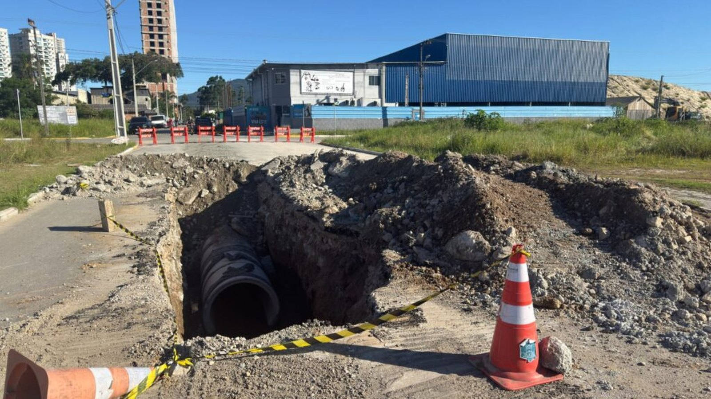

Itapema · Poder Público
Itapema · Poder PúblicoA Câmara de Itapema aprovou 11 projetos numa noite só, e sete deles esperaram mais de 300 dias para chegar ao voto
A mesma sessão de 29 de setembro, pelo lado dos projetos de lei.
A Câmara de Itapema aprovou na terça-feira, 29 de setembro, por 13 votos a 0, a Indicação 5578/2026, da vereadora Irmã Rute. Ela sugere que a Prefeitura faça estudos para criar áreas alagáveis, bacias de detenção e parques-esponja nos pontos que mais alagam. Nós abrimos as 5.668 indicações protocoladas neste ano no sistema da Câmara e contamos uma por uma: 484 citam drenagem na ementa, 46 citam alagamento, e a de Irmã Rute é a única que fala em parque-esponja.
Em 30 segundos · Modo de Leitura, formato original Santa Informa
A Câmara de Itapema aprovou uma indicação.
Foi na terça-feira, 29 de setembro.
O placar foi de 13 a 0.
Ninguém votou contra e ninguém faltou.
É a Indicação 5578/2026.
A autora é a vereadora Irmã Rute, do Republicanos.
Ela pede estudos técnicos à Prefeitura.
Estudos hidrológicos e urbanísticos.
Para criar áreas alagáveis na cidade.
E bacias de detenção e parques-esponja.
São espaços que guardam água da chuva por um tempo.
No dia a dia funcionam como praça e área verde.
Na chuva forte, recebem o excesso de água.
O texto cita Curitiba como exemplo.
Indicação é sugestão, não é lei.
Quem decide fazer ou não é a Prefeitura.
Nós abrimos o sistema da Câmara.
Contamos as indicações de 2026 uma por uma.
Foram 5.668 protocoladas até 1º de outubro.
Dessas, 5.661 foram aprovadas.
Nenhuma foi rejeitada neste ano.
Em 2025 foram 4.219 indicações.
E naquele ano 76 foram rejeitadas.
484 indicações de 2026 citam drenagem.
Em 2025 tinham sido 111.
46 citam a palavra alagamento.
E só uma cita parque-esponja.
É a de Irmã Rute.
A Prefeitura já faz drenagem pelo Avança Itapema.
Foi mais de 1 km no Jardim Praia Mar e Morretes.
Essa é a drenagem de tubo, a tradicional.
A indicação pede o tipo que a cidade ainda não tem.
Poder PúblicoPublicada em Redação Santa Informa

A Câmara de Vereadores de Itapema aprovou na terça-feira, 29 de setembro, a Indicação nº 5578/2026. O placar foi de 13 votos favoráveis, nenhum contrário, nenhuma abstenção e nenhuma ausência. A autora é a vereadora Rute Maurina Correia Guedes, a Irmã Rute, do Republicanos. O texto sugere ao prefeito que mande fazer estudos técnicos, hidrológicos e urbanísticos para criar áreas alagáveis, bacias de detenção e parques-esponja em pontos estratégicos da cidade, principalmente onde já alagou antes.
Parque-esponja é nome novo por aqui, e vale explicar. É uma área pública rebaixada que no dia comum serve de praça, campo ou jardim. Quando vem chuva forte, ela enche de propósito e segura a água por algumas horas, em vez de jogar tudo de uma vez na rede de tubos. Depois solta devagar. A justificativa da indicação cita Curitiba, que usa parques e bacias de detenção para isso, e diz que Itapema tem "um problema crônico com cheias e alagamentos", agravado pelo crescimento urbano e pelo solo cada vez mais coberto de concreto.
Indicação é sugestão de vereador ao Executivo. Não vira lei e não obriga ninguém. Para saber que peso esse voto de terça tem de verdade, abrimos o sistema de proposições da Câmara e contamos tudo que foi protocolado em 2026 até esta quinta-feira. Deu 5.668 indicações. Dessas, 5.661 estão aprovadas, cinco ainda esperam votação, uma aguarda agenda e uma foi retirada. Nenhuma foi rejeitada neste ano. Em 2025 o quadro era outro: 4.219 indicações no ano inteiro, e 76 rejeitadas.
Filtrando pela ementa, 484 indicações de 2026 pedem drenagem, e todas as 484 foram aprovadas. Em 2025 tinham sido 111, ou seja, o assunto mais que quadruplicou. A palavra alagamento aparece em 46 indicações neste ano, contra 25 no ano passado, e bueiro em 82, contra 49. Já parque-esponja e bacia de detenção aparecem em uma só, a de Irmã Rute, e em nenhuma de 2025. Esse levantamento é nosso e foi feito proposição por proposição no próprio sistema da Casa.
Do outro lado, a Prefeitura tem obra no chão. Em janeiro deste ano o programa Avança Itapema começou a implantar mais de 1 quilômetro de rede de drenagem pluvial no Jardim Praia Mar e no Morretes, nas ruas 460B, 460A e no trecho da 444 entre a 430A e a 430B, trechos que a própria nota oficial chama de "mais atingidos por enchentes". Em março havia frentes de drenagem no Ilhota, no Sertão do Trombudo e de novo no Morretes. O secretário de Obras, Jean Idimar, explicou na época que a drenagem vem antes da pavimentação para não ter retrabalho. É a rede de tubos, que tira a água dali e leva para outro lugar. A indicação pede o complemento, que é segurar parte dessa água antes que ela chegue ao tubo.
O resumo de 30 segundos está no topo e a versão completa é o texto acima. Aqui ficam as três leituras da casa sobre o mesmo assunto.
Clara, a otimista
Gostei da ideia e gostei mais ainda de ela ser inédita. Em dois anos de Câmara, com quase dez mil indicações somadas, ninguém tinha escrito a palavra parque-esponja. Agora alguém escreveu, e os treze vereadores presentes disseram sim.
E repare no detalhe bonito da proposta: o mesmo terreno serve duas vezes. Em dia de sol é praça, com grama e banco, numa cidade que tem pouquíssima área verde. Em dia de temporal vira reservatório e tira pressão do bueiro. Para uma cidade que cresceu para cima e cobriu o chão de concreto, achar um uso duplo para o pouco espaço que sobrou é muito esperto.
Seu Prudêncio, o criterioso
Merece atenção a diferença entre aprovar e executar. Indicação é sugestão, e os números que a redação levantou mostram o tamanho da fila: 5.668 só neste ano, 5.661 aprovadas, nenhuma rejeitada. Quando quase tudo passa, o voto favorável deixa de separar o que é prioridade do que não é. Quem decide a ordem das coisas, no fim, é o orçamento da Prefeitura.
Vale acompanhar também a parte técnica, que não é simples. Parque-esponja exige estudo hidrológico sério, terreno disponível, cota de nível que permita a água entrar e sair, e manutenção depois de cada chuva, senão vira charco com mosquito. Itapema é estreita entre o morro e o mar, e terreno público vazio é artigo caro aqui. Uma sugestão útil: antes de pensar em parque novo, olhar se alguma praça ou campo que já existe aceita ser rebaixado. Sai bem mais barato que comprar área.
Dito isso, reconheço o mérito da proposta. Ela pede estudo, não pede obra, e essa é a ordem certa de fazer as coisas. E ela trata do problema que a drenagem de tubo sozinha não resolve: quando chove demais em pouco tempo, tubo nenhum dá conta, e segurar parte da água antes é o caminho que as cidades sérias estão seguindo. É proposta madura, e o custo de estudar é baixo perto do custo de alagar.
Caco, o sarcástico
Cinco mil seiscentas e sessenta e oito indicações em nove meses. Nenhuma rejeitada. Isso dá umas vinte e poucas por dia útil, todas aprovadas, o que faz da Câmara de Itapema provavelmente o lugar mais concordante do litoral catarinense.
E 484 pedindo drenagem. Quatrocentas e oitenta e quatro. Se cada uma virasse um metro de tubo a gente já tinha resolvido meio bairro.
Agora sério, porque aqui tem coisa boa: a indicação de terça é a única em dois anos que propõe uma solução diferente em vez de pedir mais do mesmo tubo. Chama-se parque-esponja, funciona em Curitiba, e custa um estudo para descobrir se funciona aqui. Se der certo, Itapema ganha praça e perde alagamento no mesmo terreno. Se não der, a gente fica sabendo por que, que também é informação. Ruim mesmo é a 485ª indicação pedindo bueiro na mesma rua.
Fontes: o placar de 13 a 0, a data de 29 de setembro, a autoria e o andamento estão na ficha da Indicação nº 5578/2026 no sistema eLegis da Câmara de Vereadores de Itapema, e o texto completo com a justificativa e o exemplo de Curitiba está na íntegra da proposição. O anúncio da aprovação está na nota Câmara aprova indicação para criação de áreas alagáveis em pontos estratégicos de Itapema, publicada pela Câmara em 1º de outubro de 2026. As contagens de 5.668 indicações em 2026 e 4.219 em 2025, as situações de cada uma e os recortes por ementa (484 e 111 de drenagem, 46 e 25 de alagamento, 82 e 49 de bueiro, 1 e 0 de parque-esponja) são levantamento nosso na lista de proposições do tipo Indicação do mesmo sistema, filtrada ano a ano e conferida nesta quinta-feira. A obra de mais de 1 km de drenagem no Jardim Praia Mar e Morretes está na nota Programa Avança Itapema implanta mais de 1 km de drenagem pluvial no Jardim Praia Mar e Morretes, da Prefeitura de Itapema, de 26 de janeiro de 2026, de onde saiu também a foto de topo. As frentes de março e a fala do secretário Jean Idimar estão em Avança Itapema amplia drenagem e manutenção viária, de 25 de março de 2026. Procuramos posição da Prefeitura sobre a indicação nos canais públicos do município e até a publicação não havia manifestação sobre ela.
Itapema · Poder PúblicoA mesma sessão de 29 de setembro, pelo lado dos projetos de lei.
 Itapema · Poder Público
Itapema · Poder PúblicoOutro levantamento nosso nas fichas da mesma Casa.
 Itapema · Meio Ambiente
Itapema · Meio AmbienteO chão coberto de concreto, medido pelo IBGE.